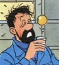

| |
|
Archives 2011
Actualités / blog des sites
|
29/12/2011
Refonte du
Courrier des Lecteurs
1ère saison
2011 publiée
25 pages web en ligne.
LIEN
|
|
|
|
27/12/2011
Rayons atomiques
La table de Mendeleïev version Dotapea a
aujourd'hui été modifiée de sorte à intégrer les données de
rayon atomique de Van der
Waals en provenance d'une source unique, le Laboratoire de Los
Alamos.
La raison de ce choix est double : d'une
part ce laboratoire met à disposition en ligne un remarquable ensemble
de pages web consacré aux éléments (lien),
d'autre part le fait de disposer d'une source homogène permet
d'effectuer des comparaisons, quoique sous toute réserve - ne nous
laissons pas emporter par l'enthousiasme - car le calcul d'un
rayon atomique donne vraiment, selon les sources, des résultats parfois éloignés.
Ainsi peut-on toutefois observer que les trois records d'épaisseur
atomique seraient largement détenus, en première colonne, par
le francium, le césium et le rubidium.
Suivent le zirconium en colonne 4 et le radium en colonne 2.
Ce sont aussi - et ce n'est sans doute pas
un hasard - les lanternes rouges de l'électronégativité. Un noyau qui
attire moins laisse son nuage d'électrons s'étendre. Soit dit sous toute
réserve car ces chiffres sont issus de plusieurs méthodes de calculs
qui, à ce jour, ne donnent pas précisément les mêmes résultats.
|
|
LIEN |
|
20/12/2011
Tensioactivité : complément
Le brave capitaine n'en revient pas : la
tension de surface, c'est quelque chose, tonnerre de Brest !
Un important complément a été apporté en
annexe (lien) au sujet de la tension de vapeur. Des informations ont également
été ajoutées en note 1 où l'on
trouvera un lien vers un très joli voyage proposé par la Nasa autour du
périple de la sonde Juno.
|
|
 |
|
19/12/2011
Tensioactivité
Tension de surface, tension
et surface
Cet ancien article, une définition de la
tensioactivité, vient d'être récrit avec une attention plus forte aux
concepts de tension, de surface et... de tension de surface, non sans
quelques détours exotiques par les neutrons cubiques et les astéroïdes.
La surface est un sujet sur lequel il est bon
de s'étendre !
Lien
|
|
 |
|
11/12/2011
Le chantier progresse !
Le courrier des lecteurs 2010 est maintenant
disponible sous la nouvelle formule "une page par discussion"
Environ 70 articles sont en ligne. In fine,
le Courrier des Lecteurs va représenter non loin de 300 pages internet. Un
site dans le site.
Pendant ce temps, pour des raisons
pratiques, Dotapea et ArtRéalité.com continuent à répondre à vos
questions, mais par courriels.
Pardon pour l'aspect apparemment passif de
cette période. La refonte du Courrier - certes guère spectaculaire mais
nécessaire - n'est qu'une partie de ce que nous mettons en place pour
2012.
Mais on vous garde la surprise :)
|
|
 |
|
18/11/2011
(entrée complétée le 19)
Refonte du courrier des
Lecteurs
2010 saison I publiée
Seize articles dont la majorité a été
révisée.
Cliquer ici.
Ai Weiwei et les Qing
d'aujourd'hui :
un jeu subtil autour d'une
photo d'apparence banale
Editorial
Pornographe ! C'est la nouvelle accusation
inventée par la dictature chinoise destinée à briser l'artiste dissident
démocrate Ai Weiwei.
Peut-être s'agit-il cependant d'une
turpitude de trop. D'ores et déjà, la situation difficile de l'artiste à
qui des millions de yuans ont été réclamés par le fisc à sa sortie du lieu
secret où il avait été enfermé plusieurs mois cette année, aurait suscité un
notable élan de solidarité en Chine. La garantie exigée - 8,5 millions de
yuans -, permettant d'interjeter un redressement de 1,7
millions d'euros, aurait en effet été réglée par des partisans solidaires à 95%
chinois selon l'intéressé. Entre 20 et 30 000 donateurs dit-on
(information non confirmée).
« Tous les matins, nous ramassons de
l'argent jeté dans notre cour. Parfois, les billets sont pliés en forme
d'avions ou de bateaux, ou enroulés autour d'un fruit », raconte-t-il
(source Arnaud de la Grange, Le Figaro du 8/11).
Ainsi l'effet d'intimidation recherché par
le pouvoir a-t-il dirait-on fait long feu, voire peut-être (bien
peut-être) renforcé l'assise
populaire de l'opposition dissidente.
Cette fois, le pitoyable argument de la
dictature est une photo (voir ci-contre) dont le moins que l'on puisse
dire est qu'elle n'évoque guère la lubricité. Il s'agit sans doute d'un
jeu beaucoup plus fin.
|
|

Un tigre, huit seins,
Ai Weiwei |
L'artiste aurait déclaré : « S'ils voient
la nudité comme de la pornographie, alors la Chine est encore dans la
dynastie des Qing ». (« If they see nudity as pornography, then
China is still in the Qing dynasty » - selon ABC News).
Cette allusion aux Qing (prononcer à peu
près « tschin » et non king) n'est pas innocente. En effet, cette dynastie
(1644-1912) était mandchoue, donc de langue toungouse comme les Evenks.
Etrangère, elle est encore globalement fort mal considérée aujourd'hui par
les Hans, blessés tant par la violence déchaînée contre eux lors de
l'invasion et des innombrables rébellions qui s'en sont suivies (les
chiffres avancés ici ou là, non confirmés, concerneraient des dizaines de
millions de mort sur l'ensemble de ces règnes) que par les humiliations
subies.
Ce sont les Qing (exactement le prince
Dorgon en 1645) qui contraignirent sous peine de mort les Hans à porter la
célèbre natte mandchoue en signe de soumission, en plus de tenues
vestimentaires mandchoues obligatoires pour différentes catégories de la
population. Une grande blessure nationale. Des pays voisins subirent au
long de cette période l'ultra-impérialisme mandchou qui poussa ses
frontières de la Corée jusqu'à Kashgar, incluant la Dzoungarie, la
Mongolie, le Tibet et Taïwan.
A partir de la moitié du XIXème
siècle, sans doute à cause d'une coupure persistante des liens avec
l'extérieur, le déclin de la Chine Qing devînt sensible et les puissances
occidentales surent largement en tirer parti.
Ai Weiwei fait ainsi une comparaison très
lourde de sens, extrêmement sérieuse car impliquant une symbolique
nationale de premier plan.
Alors que signifie donc la nudité dans cette
humble photo taxée par la dictature de pornographie ? Qu'est-ce donc qui
paraît obscène à ces tyrans plus imperméables que jamais, et ce
publiquement, à l'idée de démocratie ? Enfin, pourquoi Ai Weiwei
évoque-t-il les Qing ?
On peut supposer que le maître avait une
intention politique lorsqu'il a fait prendre le cliché par son malheureux
assistant, aujourd'hui inquiété par la police.
Weiwei ne cherchait pas la grâce. Non.
C'était peut-être une référence, discrète mais compréhensible par le peuple
han, aux contraintes vestimentaires imposées par les Qing à ce même peuple.
La soi-disant obscénité de cet anodin cliché
serait alors de nature politique. Il s'agirait d'un subtil piège
artistique et politique, dans lequel ce régime lourdaud serait tombé.
Pure hypothèse, bien sûr. Reste d'ailleurs à
comprendre pourquoi un tigre et huit seins...
|
|
|
En conclusion de cet éditorial, proposons la
lecture de cet article publié dans Al Jazeera le
9/11 :
Lien (en anglais - si ce lien venait à être rompu, merci de nous
le signaler, nous disposons d'une copie de sauvegarde)
La vidéo est fort longue et insipide - ce
n'est pas un reproche - mais le
résumé écrit est intéressant. La personne interviewée est Jin Liqun.
Ancien ministre des finances, il est actuellement superviseur de la China
Investment Corporation, entité gestionnaire des investissement de la
République Populaire de Chine. Citons-le :
|
Si vous regardez
les problèmes qui sont advenus dans les pays européens, c'est
purement dû à l'aide sociale éculée. Je pense que les lois [les
droits] du travail sont dépassées. Les lois du travail induisent
la paresse, l'indolence, plus que l'assiduité. Le système
d'encouragement [motivation] est totalement détraqué. |
|
|
If you look at the
troubles which happened in European countries, this is purely
because of the accumulated troubles of the worn out welfare
society. I think the labour laws are outdated. The labour laws
induce sloth, indolence, rather than hardworking. The incentive
system, is totally out of whack. |
Les Européens sont des paresseux à cause du
droit du travail, oui, tas de tire-au-flanc, vous l'avez bien lu et
cela émane de l'un des plus hauts décisionnaires du pouvoir communiste. Ai
Weiwei, dans la comparaison qu'il opère avec le pouvoir Qing et par la
symbolique de la nudité, pose peut-être la question « ces gens sont-ils
bien ce qu'ils prétendent ? ».
Ou ne sont-ils que d'autres Qing ?
Emmanuel Luc,
éditeur
9/11/2011
Ocre bleue - publication
d'une version courte
Un résumé de l'article « Ocre bleue : enfin
une solution ? » (chap. XXXIII
des Dialogues de Dotapea) est disponible sur le site Parlons Peinture du
CRFP.
Cliquer ici.
|
|

Jin Liqun,
Al Jazeera 9/11/2011,
capture d'écran |
|
4/11/2011
Modification de certains
aspects graphiques
Sur tout le site Dotapea dorénavant, les
liens ne sont plus soulignés "à l'ancienne". Ce changement discret nous a
demandé un travail rendu difficile par une plateforme Html un peu
archaïque mais fiable et nécessaire avant que nous puissions basculer sur
un autre outil qui est encore en cours de développement.
Si vous constatez des anomalies sur le site
suite à cette transformation, n'hésitez pas à nous
faire signe.
|
|
|
Le travail de segmentation du Courrier des
Lecteurs est toujours en cours mais n'hésitez pas à
nous écrire pendant ce temps. Nos réponses se font par mail, sans
publication pendant la durée des travaux.
28/10/2011
Refonte du courrier des
Lecteurs
2009 saison III publiée
Onze articles révisés.
Cliquer ici.
26/10/2011
Refonte du courrier des
Lecteurs
2009 saison II publiée
Publiée après révision, c'est la règle dans
ce processus.
Cliquer ici.
19/10/2011
Appel aux lecteurs pour
prise d'informations sur les cires de Chine
Suite au courrier envoyé par un lecteur au
sujet de la (ou des) cire de Chine, nous avons modifié l'article qui est
consacré à ce produit. Mais le problème n'est pas résolu car les auteurs
donnent des informations en contradiction. Non seulement nous aimerions
pouvoir trancher à l'aide de documents photo ou vidéo, mais au-delà, nous
souhaiterions pouvoir obtenir davantage d'informations sur cette substance
très fine mais encore très mal connue en Occident.
Lire
l'article
18/10/2011
Suite de la refonte du
Courrier des Lecteurs
2009-saison I
publiée (27 articles)
Une refonte qui n'est pas purement
structurelle car elle est émaillée d'ajouts et de
révisions.
Cliquer ici.
5/10/2011
Début de la refonte du
Courrier des Lecteurs
L'année 2008 publiée
Comme annoncé, le Courrier des Lecteurs ne
donne pas satisfaction sous sa forme actuelle où tous les dialogues d'une
saison sont entassés sur une seule page.
En effet, une recherche ne laisse pas
toujours apparaître des mots-clés noyés dans cet entassement, ce qui est
pour le moins dommage.
Placer chaque ensemble question/réponse sur
une page séparée est un long travail.
En effet, nous en profitons pour effectuer
quelques ajouts dont certains présentent une certaine importance. Par
exemple :
ceci, au sujet des alkydes et des oléorésines.
Les nouvelles pages seront publiées année
par année. En l'occurrence nous avons pour 2008 :
*
2008 saison 2
*
2008 saison 3
(la saison 1 n'est pas encore traitée dans
le Courrier des Lecteurs)
Le lecteur peut naviguer de courrier en
courrier ou en accès direct par l'index saisonnier et toujours par thèmes
via l'index général.
Bonne (re)lecture !
29/9/2011
|
|
|
Je vois votre mémoire
(visuelle)
De quoi notre mémoire visuelle est-elle
faite : la réponse (partielle) à cette question est un événement
scientifique bouleversant mais elle souffre d'une désastreuse
communication. Un remarquable travail peut se trouver voilé, partiellement
gâché, par une communication inadéquate...
Lire la suite.
24/9/2011
Réparations sur
ArtRéalité.com
Problèmes d'accès aux vidéos, images
manquantes... suite à ce qui ressemble à une "fausse manip", les
exclusivités étaient en mauvais état. C'est réparé, mais surtout, chers
amis lecteurs, n'hésitez pas à nous signaler tout problème sur les sites
Dotapea et ArtRéalité.
14/9/2011
Ocre bleue :
Edition validée
Au-delà de la version expérimentale, après
ajouts d'images et de textes, et après relectures, nous en voici venus à
une "version stable" sur un sujet de première importance.
Présentation et lien ci-dessous.
12/9/2011
|
|
 |
Ocre bleue :
publication des résultats de
l'enquête
Information exclusive Dotapea
Première version d'un article qui donne une
explication possible aux "mystères de l'ocre bleue et du bleu Degottex"
et ouvre sur une approche contemporaine de l'emploi des charges.
Ce que nous voyons comme des colorations
parasites pourrait avoir été aux yeux de l'artiste Jean Degottex l'occasion de donner
plus de subtilité à un procédé déjà subtil. Genèse un peu magique où dans
un sfumato l'on fait naître du bleu sans bleu, où le blanc d'ombre devient
charge d'ombre et où les foraminifères (comme celui-ci, à droite) sont
finalement bienvenus au profit d'une manière de peindre, voire de
sculpter ou d'installer, à explorer...
Les résultats (sous forme synthétique) d'une longue enquête où deux
lectrices de Dotapea ont joué un rôle de tout premier plan :
LIEN
5/9/2011
Scoop
Le mystère de l'ocre
bleue élucidé...
...sous toute réserve bien sûr, car il ne
s'agit que d'une simulation. Simulation cependant suffisamment
convaincante pour affirmer que nous avons vraisemblablement reconstitué la
très mystérieuse ocre bleue du peintre Jean Degottex.
Conclusion : c'est et ce n'est pas une ocre,
c'est et ce n'est pas du bleu, mais il y a bien un "secret". Explications
et implications dans un chapitre à paraître très bientôt dans les Dialogues de
Dotapea, cinq ans après l'ouverture de l'enquête (cf.
chapitre X des Dialogues de Dotapea),
grâce notamment à une lectrice de Dotapea basée à Rome. Merci Isabelle !
26/8/2011
Les nouvelles
Chers amis lecteurs, plusieurs de vos
courriers suscitent des "prolongations", de même qu'un gros travail ayant
un rapport avec le bleu de Degottex, entamé il y a déjà quelques années.
Nouveautés et surprises sous peu, sur ces sujets et d'autres.
|
|
 |
Pour information, la première page de
notre futur nouveau site vient d'être mise en
ligne dans un espace expérimental hier. Ainsi le 25 août 2011 est-il une
date importante dans l'histoire du Réseau ArtRéalité. C'est un premier
balbutiement. Nous ne pouvons à ce jour nous engager sur des délais
concernant ce projet ambitieux donc difficile. Nous espérons pouvoir
ouvrir courant 2011 mais rien de sûr. L'un des enjeux est un déplacement
de Dotapea.com et de ArtRéalité.com dans cet espace indépendant, construit
par nous et destiné à vous offrir de puissants services totalement
nouveaux, inconnus ailleurs.
Un ovni confortable, pas dépaysant,
familier. Même les Url actuelles resteront valables.
|
|
Un ovni familier |
En ces temps difficiles, il n'est peut-être
pas inutile de préciser que tous nos contenus
resteront accessibles gratuitement. Les nouveaux services, c'est à
part, en plus. Et pas forcément payants, loin de là. Pas de pénurie ni de
rupture chez nous, vive l'abondance, vive la stabilité. Dotapea fêtera
bientôt ses dix ans et tout ce temps s'est écoulé sans rupture éditoriale,
par des progressions simples, une production constante, c'est-à-dire en
tenant le cap et c'est tout.
|
|
Gratuité, stabilité, des
valeurs éditoriales très importantes |
Autre travail en cours :
la segmentation du Courrier des Lecteurs. Une
page par sujet. 200 sujets... c'est un travail long mais utile. Pour deux
raisons : l'accessibilité via les recherches laisse actuellement à désirer
et nous avons pensé que certaines des pages actuelles, groupées par
saisons, étaient énormes et chaque sujet nous a semblé réduit de ce fait à
être enserré par d'autres donc guère mis en valeur.
Par exemple
l'enquête sur le jaune
de Van Gogh, qui soulève dans la foulée des hypothèses sur la vie du
peintre, mérite selon nous une page séparée. Prise dans un étau, elle
étouffe les autres articles qui l'étouffent en retour.
Les contenus seront intacts et toujours
accessibles par la recherche Google, la recherche thématique ou
l'exploration chronologique. Nous allons simplement aérer tout cela. Il
faudra un peu de temps mais ce travail a commencé.
|
|
Ventiler le Courrier des
Lecteurs |
La section "Hi-tech"
dort-elle ? Oui, mais ce n'est pas de notre faute. Rien cet été,
dans l'actualité, ne nous a semblé concerner de près ou de loin les arts
plastiques. Nous continuons la veille. Cette situation ne devrait pas
s'éterniser, du moins l'espérons nous.
11/8/2011
Courrier des lecteurs
*
Marouflage sur trapèze
L'artiste peut-il s'affranchir des questions
pratiques ?
5/8/2011
Courrier des lecteurs
*
Brou de noix comme fond
L'air de rien, un sujet hi-tech se dissimule
derrière un produit vieux comme Hérode. Ce colorant, que l'on prend à tort
pour une encre ou une teinture n'a pas livré ses secrets.
4/8/2011
Courrier des lecteurs
*
Résine dure inconnue
Un mystère parfumé, l'histoire d'une
substance végétale...
2/8/2011
Courrier des lecteurs
*
Caséine comme support pour le stuc
Un stuc mantavano sur une préparation à la
caséine...
*
Huiles de tournesol à tester
Certains tests ne peuvent être réalisés
aisément dans un atelier. Ce qui pose une question de méthode rendant sans
doute nécessaire la collaboration avec des intervenants disposant des
moyens a priori nécessaires.
27/7/2011
Courrier des lecteurs
*
Bleu grec
S'agit-il d'une appellation authentique ?
Dotapea lance un appel à informations.
*
Fluorescence : enfin des
couleurs rompues ?
L'aube d'une nouvelle ère de la
fluorescence ? Une piste très intéressante à suivre de près.
*
Support peu coûteux pour
format non standard
A quelques centimètres près, il faut parfois
changer de support, de procédé, de concept.
25/7/2011
Courrier des lecteurs
* Un message à Mme A. B. de
la société G. :
nous avons bien reçu votre question
concernant les substituts au E450i mais votre
adresse courriel est en anomalie et nous n'avons pu vous transmettre notre
réponse.
Pouvez-vous nous fournir une adresse
opérationnelle s'il vous plaît ? Pour vérifier que votre serveur de mails
fonctionne, il suffit de vous envoyer à vous-même un message.
*
Peindre sur une
acrylique vernie
Un vernis, même acrylique, est un vernis
destiné par essence à être remplacé.
15/7/2011
Courrier des lecteurs
|
|
Oui, "Hi-tech" dort... |
*
Photoluminescence :
histoire et matériaux
Des précisions sur ce fascinant sujet à la fois artistique et
scientifique.
12/7/2011
Courrier des lecteurs
*
Tempéra, vernissage et
temps de séchage
Le jaune d'oeuf est assez gras. Cela
implique des précautions lorsqu'il s'agit de vernir une tempera.
*
Vernissage et marouflage
d'une gouache
La gouache devenue impasse technique
pourrait devenir impasse commerciale à terme, cédant à une implacable
logique autodestructrice.
*
Latex et imperméabilité
Une difficile question sur les
imperméabilisants du latex révèle que cette substance et certains autres
produits sont en bonne santé.
6/7/2011
Courrier des lecteurs
Des nouveautés :
*
Carton détourné comme support
Seuls certains cartons peuvent être utilisés
pour la peinture, du moins dans l'optique de résultats durables.
Occasion de souligner que nous
sous-employons vraiment certains matériaux modernes ou contemporains.
*
Térébenthine :
normalement, elle ne jaunit pas
Déterminer ce qui, dans une peinture,
provoque un jaunissement, cela nécessite une réflexion sur tous les
paramètres, y compris l'environnement.
...et un rappel :
Amis lecteurs, ne l'oubliez pas s'il vous
plaît : nous recherchons toujours des informations sur "le mystère du
rouge batéké" (lire
l'article). Il pourrait s'agir du
tsûla mais nous n'en avons pas la certitude et nos
connaissances sur la préparation de cette pâte est de toute façon
imprécise.
4/7/2011
|
|
|
L'ardoise
Refonte de l'article de Dotapea
Des
précisions importantes sur ce matériau un peu trop délaissé.
Lien.
Merci à Isabelle-de-Rome.
Ai Weiwei en résidence
surveillée
Editorial ArtRéalité/Dotapea
Sorti des geôles secrètes pour entrer dans
la prison invisible de sa résidence surveillée, le plasticien Ai Weiwei n'est plus en mesure
de donner la moindre opinion. Et finalement, après cet éditorial, nous non plus
nous n'insisterons pas car tout est dit.
L'art et la politique sont liés. Comment
parler de Picasso sans évoquer Guernica ? Et pourquoi s'en priver ? Mais si nous nous permettons
de temps en temps de l'évoquer, ce thème n'est pas central sur les sites
ArtRéalité. Dans le cas présent comme dans d'autres, c'est aux politiques
et aux citoyens de prendre le relais de l'artiste. Il s'agit donc ici
d'une parenthèse politique liée au travail artistique d'un plasticien
privé de droits.
La "libération" toute relative de l'artiste n'est pas un scoop de dernière fraîcheur.
Mais une fois n'est pas coutume, ce n'est pas involontairement que nous
avons tardé à relayer cette information.
|
|
 |
En effet, comme indiqué dans un éditorial
publié lors de sa mise au secret (lien),
l'artiste, lorsqu'il en avait encore la possibilité, a eu à coeur de
rappeler que si le régime chinois est devenu aussi puissant tout en
restant totalitaire, c'est parce que l'Occident l'a
laissé faire, et qu'en résulte-t-il ? Que cette Chine devenue plus
dictatoriale que jamais continue à "tuer des poulets pour effrayer les
singes" (cf. même lien). Entendre, et c'est bien le propos de cet éditorial
comme du précédent, que les
singes, c'est nous, nous tous, Orientaux et Occidentaux.
Ainsi donc, en tant que publication,
ArtRéalité/Dotapea se doit de ne pas entretenir une panique. Nous avons
marqué un temps d'arrêt et d'analyse critique devant cette intimidation
de proportion internationale de sorte à ne pas, in fine, jouer le jeu des
tyrans par un copier-coller de leurs intimidations littéralement jetées à
la face du monde.
Suivons donc l'idée de l'artiste.
Tout concrètement, Bruxelles et l'OMC
sembleraient effectivement porter une responsabilité partielle
mais directe dans la réussite de cette dictature décomplexée. Essayons de
nous hisser sur la pointe des pieds devant le mur de la politique et
voyons cela.
|
|
Que nous dit l'artiste ? |
Citons un vieil article de La
libre Belgique (25/4/2005, sous la plume de Vincent Slits) pour nous
rafraîchir la mémoire : « Lundi, tous les regards de l'industrie
européenne du textile se tourneront vers la Commission européenne. En
coulisses, l'Italie et la France ont mené ces derniers jours une intense
campagne (...).
Objectif: dégager une majorité pour convaincre Bruxelles d'adopter des
mesures de sauvegarde afin de contrer l'explosion des importations de
textiles chinois en Europe. Déjà, le gouvernement chinois bombe le torse
et met en garde l'Union européenne «sur les conséquences pour ses
relations avec la Chine d'une décision unilatérale». Mais les chiffres
sont là. Implacables. Suite à la fin des quotas dans le secteur, les
exportations de textile de la Chine ont augmenté de 50 pc vers l'Europe.
Le dérapage est évident. Il y a donc lieu d'agir. Sans tarder, car des
centaines de milliers d'emplois sont menacés. Une telle clause de
sauvegarde est légale : elle est prévue dans le cadre des engagements pris
par la Chine à l'égard de l'OMC. Alors que dans certains pays européens -
ne pensons qu'à la France où le « non » à la Constitution européenne reste
majoritaire - il existe une réelle fracture entre les inquiétudes des
citoyens et le projet européen ».
Il n'y a pas à commenter bien au-delà. 2005
fut une année funèbre pour le textile européen, ce n'est pas un mystère.
En 2011, alors que les Européens ont eu le temps
d'évaluer la qualité desdits textiles chinois qui ont totalement
submergé le marché et effectivement détruit des centaines de milliers
d'emplois, peut-on dire que lesdites inquiétudes ont été écoutées ? Les
parlementaires français ont de toute façon approuvé le Traité de Lisbonne par
un très intriguant vote de 336 voix contre 52 (soit 87% pour) le 7 février 2008,
trois ans seulement après le « non » référendaire des Français.
Quant à l'OMC, son Accord sur le Textile
et l'Habillement signé en 1995 prévoyait l'ouverture totale du
commerce textile mondial début 2005. Tour de force : le calendrier a été
respecté à quelques mois près. La Chine est entre-temps entrée dans l'OMC
en 2001. Rappelons que l'OMC, selon sa propre définition (lien
externe), "C'est une organisation qui s'occupe de l'ouverture
commerciale."
|
|
L'exemple du textile
chinois |
La question soulevée par Ai Weiwei semble
donc toujours pertinente, voir hurlante de réalisme : quelle résistance a-t-elle été opposée
au régime chinois par
l'Union Européenne, par les politiques nationaux ou par les diplomates de l'OMC depuis Tian'anmen (printemps 1989) ?
Le risque d'une récupération démagogique
catastrophique sur la base du "tous pourris" est énorme. Aussi
préférons-nous en rester à ces quelques mots éditoriaux pas plus anodins
que ceux de Ai Weiwei et ne s'immisçant pas davantage dans un débat
spécialisé situé au-delà de l'articulation entre art et réalité.
Emmanuel Luc
Editeur
1/7/2011
Courrier des lecteurs :
nouveautés
Avec un appel à informations sur le
rouge batéké
Les nouveaux courriers :
*
Le rouge batéké
C'est un rouge africain, oui, mais lequel
exactement ? Batéké fait référence à un peuple qui se sert de différents
rouges. Alors qui peut nous dire ce que, au Congo Brazza notamment, on
appelle rouge batéké ? N'hésitez pas à nous écrire.
*
Vernir un lino peint à
l'acrylique
Un support aussi inhabituel mérite
réflexion. Et mise au point : par exemple, qu'appelle-t-on vitrifier, dès
lors que l'on ne parle pas de verre ?
*
Solidifier des matériaux
avec de l'huile de lin
Le retour aux produits naturels impose des
contraintes. Un choix lourd de conséquences qui implique en amont une
réflexion sur le sens de cette "quête de naturel".
Et bonnes vacances si vous en prenez !
Dotapea et ArtRéalité dans son ensemble ne
prendra ni trêve ni répit afin de vous présenter de nouvelles productions
durant le second semestre.
20/6/2011
Aujourd'hui, un petit film
Chose plutôt rare, nous voulons signaler une
réalisation poétique, belle et amusante. Les
lecteurs saisiront vite la raison de ce choix.
Tout autre chose, une nouvelle entrée du
courrier des lecteurs :
*
Enduction lustrée et tension
La colle de peau tend la toile, les liants
synthétiques, non. Par contre ces derniers ont une très bonne tenue.
Comment tirer parti des ces deux matériaux d'enduction ?
18/6/2011
Courrier des
lecteurs :
quatre nouvelles
questions/réponses
*
Bois entoilé
Une planche de tilleul comme support est une
bonne base, mais comment l'enduire ? Une jeune lectrice tente d'adapter un
procédé de Xavier de Langlais à des produits plus contemporains. Des
problèmes surviennent...
*
Dammar et résistance
Quelle résine employée pour un bois qui doit
subir des contraintes importantes ?
*
Pâte à bois caséine
trop rigide
La pâte à bois à la caséine n'est pas un
support structurel mais un parement.
*
Mayonnaise et eau
oxygénée
L'occasion d'évoquer un certain nombre de
phénomènes autour d'une substance jusqu'à présent absente de Dotapea.
30/5/2011
Chaux : précisions
Un petit mot pour signaler deux petites
précisions apportées à l'article consacré à la chaux.
Ces modifications de peu d'ampleur ne sont signalées dans ce blog que parce que nous avons
remarqué l'intérêt que vous, chers lecteurs, portez à ce liant
remarquable.
En résumé, la "chaux maigre" peut être une
chaux cochonnée (n'ayons pas peur des mots), on avait oublié de le dire.
Mais cela ne change strictement rien aux définitions ni aux usages.
Lien.
Deuxième précision : à la fin du cycle de la
chaux, lorsque celle-ci a "carbonaté", elle n'a fait que réincorporer le
CO2 émis lors de la calcination initiale. Ce dernier point,
évoqué mais insuffisamment souligné jusqu'à présent dans cet article, est
important (lien).
Disons-le donc plus haut et fort : la chaux ne contribue pas à éliminer
les excès de gaz à effet de serre puisqu'elle en produit initialement.
26/5/2011
Courrier des lecteurs :
début de la nouvelle saison
La deuxième saison 2011 s'ouvre par quatre
courriers dont un (le dernier de cette liste) a nécessité un travail de synthèse d'une certaine importance sur ce site.
*
La chaux aérienne comme
support pour l'huile
Une bonne idée ? Peut-être sous certaines
conditions.
|
|

Une image très célèbre :
un inconnu fait face à une colonne de chars pendant la répression
sanglante contre les contestataires démocrates de la place Tian'anmen à
Beijing en 1989 |
*
Carnations
Une couleur ne peut pas résumer une peau.
Retour sur un monde bien réel où les même les tomates apparaissent parfois
tout à fait noires.
*
Alcool pour fixatif
Les dénaturants de l'éthanol peuvent
effrayer, à juste titre pour certains sans doute, mais le choix d'un
alcool pour une laque ou un fixatif ne devrait pas poser de problèmes.
|
|
 |
*
Oxyder les pigments :
techniques
Une question simple en soulève parfois de
très essentielles !
La structure d'un nuage électronique
détermine la couleur renvoyée par une molécule ou un atome. Tout l'univers
chromatique répond à cette règle qui semble encore fort mystérieuse. Entre
autres abordées dans ce texte court, fruit d'un travail de synthèse.
Voyage tout au coeur de Dotapea...
|
|
|
|
9/5/2011
Piss Christ : ne pas s'y
tromper
Beaucoup parmi nous ont été presque "lassés
d'avance" par le titre d'une oeuvre d'art contemporain : Piss Christ.
On verra d'ailleurs ci-dessous que ce n'est pas le véritable titre de
cette oeuvre.
Mais à l'origine de cette lassitude, une
question se posait effectivement pour le public : s'agissait-il encore d'un
fatiguant pamphlet dans la veine
des caricatures du prophète de l'Islam (sAaws) ? La presse - même les
grands quotidiens francophones - est restée laconique, se contentant de
rapporter les destructions perpétrées en avril 2011 par un groupe
d'extrémistes catholiques dans la galerie Yvon Lambert, en Avignon.
|
|
|
Or, comme le rappelle à point nommé l'éditorial de LaCritique.org (lien)
alors que l'exposition continue,
l'artiste, Andres Serrano, est chrétien d'une famille hondurienne et son
travail est ancré dans ses convictions, elles aussi catholiques. Il dit
en effet ceci : "Si en faisant
appel au sang, à l'urine, aux larmes, ma représentation déclenche des
réactions, c'est aussi le moyen de rappeler à tout le monde par quelle
horreur le Christ est passé." Voilà sa conviction, voilà le sujet
de son oeuvre.
On ajoutera au passage que le titre de ce
travail photographique déjà ancien (1987) n'est pas Piss Christ mais :
Immersion (piss Christ)
ce qui n'est pas un détail.
L'image - belle, comme le souligne Christian
Gattinoni - utilise un objet très ordinaire, un crucifix de peu de prix.
Elle est pleine de sens, tout à l'opposé d'un brûlot médiatique ou d'une
provocation irresponsable.
On aime ou l'on n'aime pas l'oeuvre, bien
sûr, on partage ou non ces convictions religieuses, cela va de soi, mais
il s'agit indéniablement d'une oeuvre d'art forgée par une inspiration
originale et personnelle.
D'où l'absolue nécessité de la critique
d'art. Elle permet de... ne pas s'y tromper ! et de ne pas voir une
dérive de l'art contemporain là où il n'y a pas de dérive du tout mais
surtout une grande sottise de la part des détracteurs intégristes qui se
permettent de s'en prendre à une oeuvre. Oeuvre qui célèbre de plus leur
propre dieu. Dans une ville d'Avignon qui doit pour le moins beaucoup aux
artistes.
Emmanuel Luc
Editeur
22/4/2011
--> màj dimanche 24
Sable Rouge,
pourpre et télévision
Clothilde Bernair intervient avec brio dans le Courrier des Lecteurs sur un sujet
vénérable et difficile : l'enduction de la bauge.
C'est ici.
Signalons par la même occasion
l'ouverture d'une page Facebook consacrée à son
entreprise, Sable Rouge.
Lien.
Venez nombreux !
Et demain samedi 23, deux amies de
Dotapea interviennent dans le champ télévisuel :
* Inge
Boesken Kanold, sans laquelle l'article consacré sur Dotapea à
la pourpre pourrait être considéré comme
inexistant, est à 14h50 sur France 2
* Clothilde
Bernair est à 18h30 sur RTL TVI pour un « Reportage 'Clef sur porte':
Les Salles de bain de Clothilde ». Oui, la même :)
Ajout dimanche 24
 Vous pouvez
retrouver cette courte mais sympathique émission
en cliquant ici. Vous pouvez
retrouver cette courte mais sympathique émission
en cliquant ici.
20/4/2011
|
|
Immersion (piss Christ)
Andres Serrano, 1987 |
Bellastock, une ville en
un souffle
Enfin, nous tenons parole : Dotapea
s'ouvre à l'architecture.
Pourquoi ? D'abord parce que c'était
naturel, fut un temps.
|
|
|
Michel-Ange, Brunelleschi et Vinci
étaient artistes et architectes.
Une autre raison de ce choix est
l'activité et le dynamisme inventif actuels du champ architectural.
|
|
|
 |
 |
|
Deux oeuvres de
Michelangello Buonarroti |
|
Pour cette entrée en matière, le festival Bellastock,
au centre de ce nouveau Dialogue de Dotapea nous a
semblé emblématique par son formidable défi de construire une ville,
relevé chaque année. Il s'agit, avec des moyens techniques
particuliers mais comparables à ceux des plasticiens, d'une mise à
l'épreuve dans le réel d'une construction sociétale inscrite dans
l'espace, c'est-à-dire d'un urbanisme.
Traduit dans le vocabulaire des arts
plastiques, c'est une installation plus une performance. De taille.
|
|
 |
Bellastock édition 2011, on le verra au cours de
cet entretien, construit
une ville en un souffle, partant des concepts d'architecture
des
gonflables créés par un précurseur, Hans Walter Müller. En les
adaptant à une expérience d'urbanisme, cette association prolonge un
champ de recherche ouvert par lui il y a quarante ans, en pleine éclosion
aujourd'hui.
Allons voir ce que font les
architectes !
Lire
l'article (chapitre XXXI des Dialogues de Dotapea)
|
|
 |
|
12/4/2011
|
|
Editorial :
Ai Weiwei
Nouveautés :
courrier des Lecteurs |
"Tuer des poulets pour effrayer des singes"
Sur la disparition de
Ai Weiwei,
artiste plasticien chinois
En janvier déjà, l'éditorial de
LaCritique.org
nous avertissait, sous la plume de Christian Gattinoni, de nouvelles
difficultés pour l'artiste dissident Ai Weiwei devant des mesures
de rétorsion de l'Etat chinois : placement en résidence surveillée,
destruction de son blog et démolition de son atelier de Shanghaï.
|
|
|
Aujourd'hui, la presse internationale (liens
ci-contre) nous apprend que le maître a littéralement disparu après son arrestation
dimanche 3 avril à l'aéroport de Beijing.
Ai Weiwei est depuis détenu en un lieu tenu
secret sous la suspicion de "crimes économiques", accusation usuellement
retenue contre les dissidents politiques.
La police a saisi ordinateurs et
documentations, interrogé les proches et les assistants sans présenter de justificatif juridique.
Le concert des nations (notamment l'UE et
les USA) a bien entendu condamné ce qui ressemble en tous points à une
détention arbitraire. Mais la presse internationale, pas tendre, évoque aussi une vague
de fond de répression brutale dans tout le pays depuis quelques semaines.
Ai Weiwei était jusqu'alors plus ou moins
protégé par sa renommée artistique, sa participation à la construction du
stade des JO et sa filiation directe du poète Ai Qing, son père décédé en
1996, qui fut un grand francophile et une sorte de héros national du
régime maoïste suite à son emprisonnement par le Kuomintang de Sun Yat
Sen.
Mais aujourd'hui, la Chine Populaire
raisonne semble-t-il en d'autres termes. A ce sujet, on citera l'article
de Philippe Grangereau (in Libération du 7/4, pardon pour cette citation
inhabituellement longue, justifiée par le fait qu'il s'agit sans doute du
document le plus précis
sur cette situation en pleine évolution) :
" « Les "guobao" [brigadiers de
protection de la sécurité intérieure, ndlr] peuvent nous arrêter quand ils
veulent, où ils veulent, nous emprisonner le temps qu'ils veulent et nous
maltraiter comme bon leur semble », déplore un professeur d'université
qui préfère garder l'anonymat. Gao Zhisheng, avocat des droits de l'homme
enfermé on ne sait trop où depuis deux ans, a ainsi subi des sévices
indescriptibles. Selon un journaliste d'Associated Press qui a pu
recueillir clandestinement ses propos l'an dernier, il a été dévêtu,
attaché puis battu pendant deux jours et deux nuits par plusieurs
policiers. L'avocat a également eu ses parties génitales percées par des
cure-dents, selon un texte qu'il est parvenu à rendre public. «Cette
campagne de persécution a été ordonnée au plus haut niveau du Parti
communiste, explique une source bien informée. L'objectif est de "tuer des
poulets pour effrayer les singes".»
Comprenez semer la terreur.
Ces rafles d'opposants à la chaîne
s'accompagnent d'une réaffirmation sans ambiguïté par le pouvoir de la
«supériorité» de la dictature du Parti unique. «Nous jurons
solennellement que nous n'adopterons jamais le multipartisme ; que nous ne
diversifierons jamais notre ligne politique ; que nous ne séparerons
jamais les pouvoirs exécutif, législatif et judiciaire ; que nous
n'adopterons jamais un système bipartite; que nous ne privatiserons pas»,
a d'ailleurs lancé début mars, le numéro 2 du comité permanent du Bureau
politique, Wu Bangguo. "
Comme le signale également Le Figaro, " Cette
politique s'est encore raffermie pour contrer les appels lancés, en
février, sur Internet pour une «révolution de jasmin» en Chine.
D'importants moyens sont mis à la disposition des polices pour censurer
Internet et réprimer efficacement tout défi, si petit soit-il, à la
dictature du Parti unique. "
S'agissant d'une célébrité telle que Ai Weiwei,
le but est-il d'intimider le peuple ? Peut-être pas
uniquement le peuple chinois. Ceci nous ramène à une lucide
mise en garde de l'artiste (citation Ph. Grangereau ibid.) :
" L'embastillé Ai Weiwei a l'art de poser
les bonnes questions. L'an dernier, dans un éditorial publié par le Wall
Street Journal, il s'interrogeait sur le partenariat que l'Occident avait
scellé avec la Chine, lui permettant de devenir la seconde puissance
économique du monde tout en légitimant et en renforçant son régime
répressif. « Comment, écrivait-il, un Etat basé sur la limitation des
flux de l'information et de la liberté de parole peut demeurer puissant ?
Et si cela est possible, alors, quelle sorte de monstre va-t-il devenir ? » "
La réponse à ce questionnement - quelle
sorte de monstre ? - est maintenant devant nous, réelle. Un tel monstre ne
se contente pas de limiter l'accès à l'information : il utilise de fait
l'information pour faire peur, c'est le moins que l'on puisse dire après l'arrestation
et la mise au secret d'un maître de l'art contemporain.
Emmanuel LUC
Courrier des lecteurs
Printemps 2011
|
|
Revue de presse
Le Figaro
Al Jazeera
Libération
The New York Times
Der Spiegel
Si l'un des articles
venait à manquer,
n'hésitez pas à nous
le signaler : des
sauvegardes sont
à disposition. |
*
Auteurs et ouvrages
Un lecteur suscite un utile retour sur les
sources d'informations pédagogiques dans le domaine de la peinture.
Jean-Pierre Brazs apporte des ressources bibliographiques qui méritent
notre attention.
*
Encre de Chine
défectueuse
Un support classique, une marque connue...
comment de tels incidents sont-ils encore possibles ?
*
Mastic pour arbres
fruitiers et bouillie bordelaise
Flirtons avec le hors sujet puisque c'est au
profit d'un débat intéressant.
*
Enluminures
Tout d'abord, qu'appelle-t-on enluminer ?
*
Mangouste, soie et
robustesse
La mangouste, poil utilisé pour les pinceaux
destinés à la peinture à l'huile, nécessite-t-elle un traitement
particulier ?
*
Dammar et méthode Wacker
Un lecteur, ancien élève de Nicolas Wacker,
donne des précisions sur une méthode de préparation de la gomme dammar.
*
Béton ou ciment coloré à
l'extérieur
Ferrer n'est sans doute pas inutile.
*
Patines sans
térébenthine
Encaustiques et essences non végétales.
18/3/2011
(mis à jour pendant la
journée)
Les rayons atomiques
Sujet piège, question philosophique
autant que concrète :
quelles sont les frontières d'un
atome ?
Dotapea s'y frotte et s'y pique. Cela
donne un nouvel article du glossaire.
Cliquer
ici
L'iode, un élément dont
on parle beaucoup
L'actualité au Japon a entraîné une
véritable folie planétaire autour de l'iode 131. Certains amis du
réseau ArtRéalité étant eux-mêmes japonais donc concernés plus
directement, nous avons développé l'article consacré à l'élément
violet.
Cliquer ici
7/3/2011
Noir et bleu
L'article concernant le noir d'ivoire a
été complété (lien), de même que
l'anecdote associée, "Le noir chaud qui bleuit" (lien).
|
|
 |
Occasion pour nous de rappeler que
l'élucidation du mystère de l'ocre bleue de Jean Degottex attend
toujours un échantillon de blanc d'ombre que nous serions prêts à
analyser. Lire ou relire le chapitre X
des Dialogues.
Lecteurs de Dotapea en voyage dans la
région de Nocera Umbra (Ombrie, Italie), n'hésitez pas à
prendre contact avec nous.
1/3/2011
Modification du portail
du réseau ArtRéalité
Le portail du réseau A.R. n'est rien
d'autre que la page qui s'affiche lorsque l'on entre dans
Artéalité.com. Elle permet de découvrir les différents sites et
d'effectuer une première navigation thématique.
Ce premier mars, il a fallu la modifier
en retirant le dispositif vidéo qu'elle contenait et en supprimant les
références à Walesgal et Fenêtre du Sites (dit Fest), en attendant
d'ajouter une future référence au site Wal, en cours d'élaboration.
Walesgal, que l'on peut encore visiter
pendant quelques jours (lien)
va aisément se fondre dans Wal.
Fest sera recyclé plus tard.
24/2/2011
Nouveaux articles de
taille dans le courrier des Lecteurs
*
Van Gogh, son jaune, l'ESRF
et d'autres mystères
Deux articles en un, pourrait-on nous
reprocher à juste titre.
|
|
|
L'analyse de jaunes de chrome contenus
dans deux tableaux de Van Gogh a été signalée dans la presse.
Nous faisons le point en nous basant
principalement sur le communiqué du principal maître d'oeuvre, l'ESRF.
|
|
 |
Tout autre chose, une
courte
enquête (qui aurait mérité des années de travail) revient sur les
zones d'ombre entourant la vie et l'oeuvre du maître précocement
disparu, à la lumière de travaux récents et moins récents.
|
|
|
*
Le contraire de Dotapea
Rares sont sur Dotapea ce que l'on nomme
des billets d'humeur, mais parfois une franche mise au point est nécessaire.
Ne pas savoir n'autorise pas à
désinformer, certains ne l'ont pas compris.
Un article éditorial pour une fois tiré
à boulets fumants.
WALESGAL et Fenêtre
sur sites (FEST) bientôt hors ligne
Walesgal.com sera partiellement repris,
sous une autre forme, dans le projet Wal.
Fenêtre sur sites disparaît après de
trop nombreux problèmes techniques qui ont curieusement accompagné les
déboires notables du web artistique francophone ces dernières années.
Il réapparaîtra dans quelques années sous une autre apparence.
Quant à Wal, il est en cours de
développement. Ce gros projet (une sorte de "Réseau ArtRéalité v2") ne
sera dévoilé publiquement que progressivement durant l'année 2011.
|
|
|
|
2/2/2011
Courrier des lecteurs :
Dotapea a rattrapé son retard
Nouveautés :
*
Atténuer la brillance
d'une huile à l'aide d'une cire
Un retour sur les procédés huile/cire.
*
Restauration d'une
statue de pierre peinte
C'est un travail difficile mais
indispensable que de reconstituer l'aspect initial de l'oeuvre.
Ce qui clôture ce cycle de quatorze
questions/réponses correspondant à une période d'un petit mois et
demi. Etions-nous donc tellement en retard ? Oui et non. Oui parce que
certaines questions ne peuvent attendre une réponse si longtemps. Non
parce que les urgences sont traitées hors publication et puis... le
courrier des lecteurs n'est pas un forum. Les réponses nécessitent du
temps, elles sont de véritables articles.
Nous allons essayer de raccourcir les
délais à quinze jours maximum, autant que possible.
Bonne lecture !
1/2/2011
Courrier des lecteurs :
Dotapea rattrape encore son retard et ce n'est pas fini
Nouveautés :
*
Récupérer d'anciennes
toiles peintes
Un sujet presque tabou et une pratique
aux résultats aléatoires.
*
Coton : encore une toile
défectueuse ?
Très probablement un énième problème
avec une toile en coton.
*
Tempera prête à l'emploi
La peinture à l'oeuf est un procédé
ancien et efficace. Un conditionnement en tubes pourrait répondre à un
besoin si l'information du public rendait ces produits plus séduisants
que les oeufs frais.
*
Jute : une enduction à
haut risque, suite n°2
Une quasi conclusion de ce dialogue
consacré à l'emploi peu commun de la toile de jute.
31/1/2011
Courrier des lecteurs :
Dotapea toujours en rattrapage !
Les nouvelles questions et réponses :
*
Vernissage incomplet
Corriger un vernissage insatisfaisant
est une tâche délicate.
*
Céruse : est-elle
décolorante ?
Le témoignage d'une lectrice sur son
expérience avec le blanc de plomb et différentes huiles de lin.
*
Recettes danoises
pour la peinture extérieure
Un document apparemment très précieux...
mais à traduire de l'anglais au français.
30/1/2011
Courrier des lecteurs :
Dotapea rattrape son retard !
Une conjonction de bonnes et mauvaises
choses a quelque peu retardé le traitement depuis décembre. Toutes nos
excuses.
*
Cuve, marbre et miscibilité
Quand le peintre recherche des peintures
qui ne se mêlent pas.
*
Droit de reproduction
Quand le plasticien a besoin de
reproduire des oeuvres dans ses propres oeuvres.
*
Signatures destructrices
Une simple signature au dos d'une toile
peut attaquer ladite toile. En quelques mots, comment éviter cela.
*
Huile d'olive
retardatrice
Un retardateur pour la peinture à
l'huile ? Quelques éléments de réponse.
*
Vernis acrylique à
détacher
Une petite tache peut devenir une grande
catastrophe, comme l'a prouvé Mr. Bean.
A suivre...
11/1/2011
Notre carte de voeux :
Cliquer sur l'image
[Acad.] Chantier,
du latin cantherius, « cheval de charge », d'où « support,
chevron », du grec kanthêlios, « âne bâté ».
Ânes bâtés nous sommes en ce début d'année
car deux chantiers sont en cours. Veuillez pardonner notre retard dans le
traitement du courrier. En décembre nous fêterons le dixième anniversaire
de Dotapea et pour cette occasion nous aimerions pouvoir vous présenter
des réalisations appartenant à une véritable nouvelle génération.
Elles n'apparaîtrons pas d'un seul coup.
Vous les découvrirez au fil du temps. A bientôt.
1/1/2011
Bonne année dans l'art et dans la réalité à
toutes et à tous !
Une confirmation : l'ouverture de Dotapea à
l'architecture aura prochainement lieu.
|
|
|
Retour
début de page
|
|

 Communication
Communication
|
|

{kind=link}